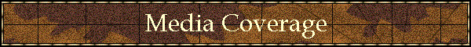

|

|
|
|
FEMALE INFLUENCES RECOGNIZED IN REINE-DE-COURSE SERIES Steve Mansfield
(First Published in The Backstretch, December 1993, and updated/revised by the author for purposes of publication on this web site.)
When breeders and certainly bettors look at pedigrees, the emphasis is far too often placed on the stallion. The female half of the equation is frequently glossed over, often because a meaningful analysis of female families is at the bottom of the information ladder. Stud books owe their existence to stallion advertising; trade publications rank stallions' progeny earnings and performance statistics; articles abound on the influence of males in pedigrees. The most accepted bloodlines authorities offer historical tends that are dominated by male influences: Vuillier, Varola, Hewitt, and Roman are names that are quickly identified with stallion analysis and the Dosage theory that has evolved through their research. Certainly Dosage and its Chef-de-Race list of influential stallions, embraced in some quarters and damned in others, has had a major impact on how we look at pedigrees. Too often the emphasis is on stallion to stallion crosses, the more Chefs the better, without regard to strength or weaknesses in female contributions. Proponents of Dosage argued that a list of influential mares was meaningless because mares are influenced by the Chefs in their pedigrees, plus they can only produce a limited number of foals in their lifetime - say 10 vs. a stallion's 400. Turf writer and pedigree analyst Ellen Parker felt that such logic, while valid, was incomplete. "To ignore or lessen the importance of great mares," she observes, "because their pedigrees are composed of good stallions is absurd because their pedigrees are composed of an equal number of mares. "Further, the percentage and/or type (as in the case of a mare exerting more influence than the sire) of superior horses or stakes winners produced is far more important than the number of stakes winners produced. Moccasin's seven stakes winners and two champions from nine foals is a good example - or Too Bald 'speeding up' the sires to which she is bred, like Baldski, who is hardly a typical Nijinsky II stallion. This is reflected in their respective Chef-de-Race classifications: Nijinsky II is a classic-solid Chef-de-Race, Baldski a brilliant-intermediate Chef. Yet no credit is given to Too Bald, which is the source of Baldski's brilliance." Parker, whose nearly encyclopedic knowledge of pedigrees constantly amazes those closest to her, never intentionally set out on a campaign to recognize influential mares, but eight years ago she almost 'accidentally' created the Reine-de-Course series: a list of influential mares without the mathematical games that revolve around the Chef listing. It was a list that her ongoing research simply led her into. "Whether," she notes, "you subscribe to 'Bull' Hancock's oft-repeated theory that 'the family is stronger than the individual', or talk to an old-time trainer who says that 'a good man has a good Mother, so a good horse has to have a good Mother, too', it has always been clear to horsemen that an entire female family, particularly a family with several very strong branches like *La Troienne, can have a profound influence on the horse in question. "Taproot mares, blue hens, whatever one wishes to call them, had long been recognized by breeders, but they never had their own list as the sires did." The seed for the Reine-de-Course series was actually planted over 20 years ago when Parker worked briefly at The Jockey Club helping put together their Statistical Book and began what proved to be a lifelong friendship with the late Bob Stokhaug, who wrote a series for the now defunct Thoroughbred Record called "American Matriarchs". Still, her interest in female influences remained a private one until a few years ago when, during the course of a regular correspondence with Leon Rasmussen (a major influence in her early pedigree interest), she observed that it had become apparent that Apalachee (Round Table-Moccasin) was an aberration, and was throwing (siring) to his speedy family rather than to his solid sire line. "A number of his speedy fillies like Pine Tree Lane and Clock's Secret were at work that year," Parker recalls, and she wrote to Leon commenting that, "it would seem that Moccasin, a champion two-year-old and, in fact, the only female ever named Horse of the Year at two, is the dominant force in this pedigree. Further, Apalachee resembles the Rough Shod II (dam of Moccasin) family; he is longer, rangier and somewhat coarser than the typical Round Table type. "What should we call these dominant mares? Reines-de-Course?" Parker notes that the term Reines-de-Course "Just came out of my head. It had to be French, a language I was familiar with, because Chef-de-Race is French. Queens of the Turf - Reines-de-Course - it had a nice ring to it." Still, writing about influential female families and naming Reines-de-Course might not have transpired were it not for Capote and Parker's interest in writing about his dam, Too Bald, in a piece for Owner-Breeder magazine. "I had been watching Capote," Parker says, "as I had predicted he would take off big-time as a sire. It was clear that Too Bald was influencing her sons - Baldiski (by route sire Nijinsky II) and Exceller (by route sire Vaguely Noble) were siring horses faster than their sire lines. Since the Slews already had plenty of lick and since Seattle Slew was already a proven sire of sires, Capote seemed a natural. He was sure to be a good sire because of Slew and he was sure to take off early because of Too Bald's influence. In due course he was far and away the leading first crop sire and now stands alongside his sire at Three Chimneys Farm." Parker was simply experimenting when she used the term Reine-de-Course in her Too Bald article, but it was a term that appealed to publisher Jack Werk and the stories on great mares became a regular series in Owner-Breeder. "The series was conceived as a combination of things," Parker points out. "My increasing awareness of female families because of the considerable interest I had always had in pedigrees, Apalachee and Capote's success, that letter to Leon, and of course Bob Stokhaug. I have used his 'American Matriarchs' series as research material on more than one occasion, and I consider all my work on the great mares dedicated to him. "Bob's stories, however, covered mares who were American Broodmares of the Year and who, in large part, made an impact on racing in the U. S. I visualized the Reines in an older and much broader context - it had to include old-timers like Mumtaz Mahal and Plucky Liege to be worth anything. So there is credit to Bob, but I expanded on the idea." Certainly the modern era of computerized pedigrees has helped Parker's research in digging into families, but that raw data is simply an adjunct; most of her effort is expended in time-consuming extracts from a large personal library and the analysis of those pedigrees utilizing her own years of knowledge. Only from this lengthy process does a mare receive the Reine-de-Course designation, which she considers somewhat different from the naming of Chefs. "Sires are classified as individuals," she points out, "but I tend to cast the Reines as members of special, or certain types of, families. "The Hidden Talent/Too Bald family, for instance, tends toward speed; the Boudoir II and Plucky Liege families tend to produce excellent sires. The Bourtai clan has a 'sex bias' and produces better producers than sires for the most part. So while a mare can be speed or stamina dominant like a stallion, she can also be dominant for producing good male or female progenitors. "As an example of how strong a family's influence can be on a given horse, take the great race horse Spectacular Bid, who is from an unbroken line of Chef-de-Race sires: Bold Bidder-Bold Ruler-*Nasrullah-Nearco. However, his female family is weak, and as a result he failed to meet the high standard set by Claiborne Farm for its successful stallions and is currently standing in New York, where he has even been bred to show horse mares. He's the perfect example of the family being stronger than the individual." Parker moved the series to The Homestretch, the official magazine of the Oklahoma Thoroughbred Association, in 1993, a stage from which she and the Oklahoma association hope to see her efforts reach more small breeders. She also cites the importance of people taking the time to read the "why" of her selections. "When I started the series I had two choices - I could either print a whole list of mares and then write about them, or I could write about them and name them as I went along. I chose the latter because the Chef list is all too often just that: a list. Your average breeder will look at a horses like Gundomar or Chateau Bouscat and not only not know who they are but what they did to earn Chef status in the first place. Most have no resources to find out, so they end up not caring, thus creating a gap in their knowledge of the great sires. But with the Reines named as they are written, as I have done, you not only know who they are but why they were good enough to be considered Reines in the first place." The Reine-de-Course list currently numbers close to 400 mares, and Parker sees only growth in the names of female influences to look for. "I think I could keep up the series indefinitely and never run out of ideas - but sometimes a horse in the news will prompt me to add a name to the list sooner than I might have. I moved the mare Court Dress forward in the 'Reines to do' file when Charismatic won this year's Derby and Preakness and did the same with the mare Colosseum when her relations Almutawakel (Dubai World Cup) and General Challenge (Santa Anita Derby) won major events this year. Both were always going to be Reines, but their making recent news highlighted these families and it's always nice to write about a Reine who is in the headlines. "Breeders can gain in two ways from looking at the list. One is that they can identify strong 'sire families' like Uvira II or Myrtlewood and throw out sires from families with a sex bias toward fillies. This aids them in chancing makings to young sires with no foals at the track. "When buying mares or mating mares, they need to determine how strong the mare's family is and what strengths she has present in her pedigree that can be inbred to; knowing the great families is a tremendous aid, especially in the latter endeavor. When buying, this could mean a difference in price, and when culling this can make a difference between selling or breeding a mare. "In Dosage, a formula gives mathematical probables. With Reines, you see an overall - and I think more complete - picture of a whole pedigree. The more you know about the pedigree, the more you know about the horse in whom you are investing. Rather like a prospectus for a stock: find out all you can before jumping in too deep." Parker's interest in pedigrees and families has created a series that already appeals to a knowledgeable audience and will continue to gain acceptance. Several pedigree software manufacturers - Paddock Pedigrees, ThoroughPed and Tesio Power include the Reines as part of a package that once 'only' included Chefs-de-Race. As Parker and the Reine-de-Course series will continue to prove, it isn't entirely a man's world. |
Copyright © 2001 Ron & Ellen Parker
|